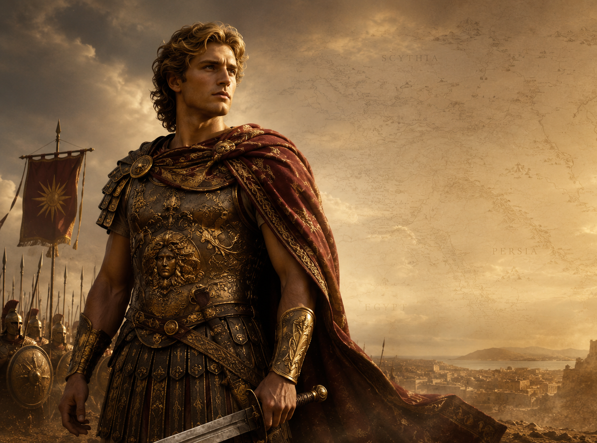

Ancient Mystery Unearthed
The Lost Tomb of Alexander the Great
The king who conquered the world... then vanished beneath it.
MACAT Showcase by 8G
Alexander the Great built an empire stretching from Greece to Egypt, Persia, and India. But after his death in 323 BCE, the greatest mystery began. His tomb was once famous. Roman emperors visited it. Ancient writers described it. Then it disappeared.

The Journey
Follow the mystery page by page
The Legend
How a young king became the most powerful name in the ancient world.
IIDeath in Babylon
The sudden death that threw an empire into confusion and rivalry.
IIIThe Stolen Body
The dramatic transfer from Babylon to Memphis and then Alexandria.
IVThe Lost Tomb
The famous Soma, once visited by emperors, now swallowed by time.
VMain Theories
The leading ideas behind where Alexander's remains may still lie.
VIWhy It Matters
Why finding the tomb would change our understanding of history.